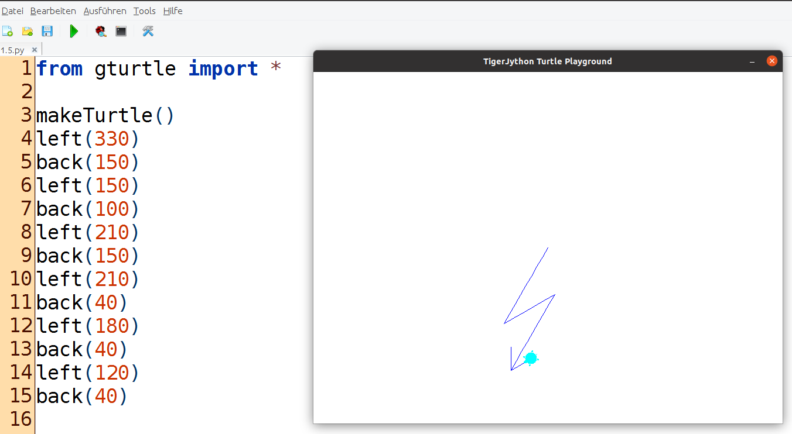

TigerJython ist eine freie Entwicklungsumgebung für Python, welche speziell für den Programmierunterricht entwickelt worden ist. Die erste TigerJython-Version wurde von Tobias Kohn an der ETH in Zürich geschrieben, heute wird TigerJython vom Verein TJGroup betreut und weiterentwickelt.

TigerJython werden wir nur am Rande (z.B. in der Robotik) benutzen.